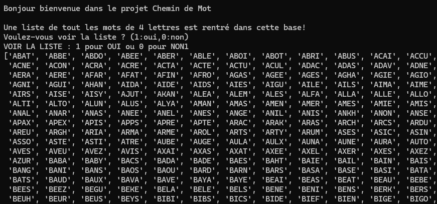

Chemin de mots
Description
Dans le cadre de mon apprentissage en Python, j’ai réalisé un projet basé sur la recherche de chemins entre des mots en utilisant le principe des graphes. L’objectif du programme est de trouver un mot de quatre lettres en passant d’un mot à un autre, avec une contrainte précise : on ne peut se déplacer vers un nouveau mot que si une seule lettre est différente du mot précédent. Le fonctionnement repose sur la modélisation des mots sous forme de graphe. Chaque mot représente un nœud, et une arête relie deux mots lorsqu’ils ne diffèrent que par une seule lettre. À partir d’un mot de départ, le programme explore alors les différentes possibilités pour atteindre le mot cible en respectant cette règle.

Organisation
Pour mettre en place ce projet, j’ai utilisé des structures de données adaptées comme les listes et les dictionnaires afin de représenter le graphe. J’ai également implémenté un algorithme de parcours, comme une recherche en largeur, pour trouver le chemin le plus court entre deux mots.
Compétences acquises
Ce premier programme fut mon premier projet informatique. Il me montra réellement les bases d'un projet et qu'il fallait avoir l'organisation et l'idée bien fixe en tête.
Acces au projets
Conclusion
En conclusion, ce projet de recherche de chemins entre des mots m’a permis d’approfondir ma compréhension des graphes et des algorithmes de parcours en Python. En modélisant les mots comme des nœuds reliés par des arêtes lorsqu’une seule lettre change, j’ai pu appliquer concrètement des notions théoriques comme la recherche en largeur pour trouver le chemin le plus court. Ce travail m’a aidé à développer ma logique, ma rigueur et ma capacité à structurer un programme plus complexe. Il m’a également permis de mieux comprendre l’importance du choix des structures de données et de l’optimisation des algorithmes. Ce projet représente la première étape dans mon apprentissage, car il combine réflexion algorithmique et mise en pratique concrète.